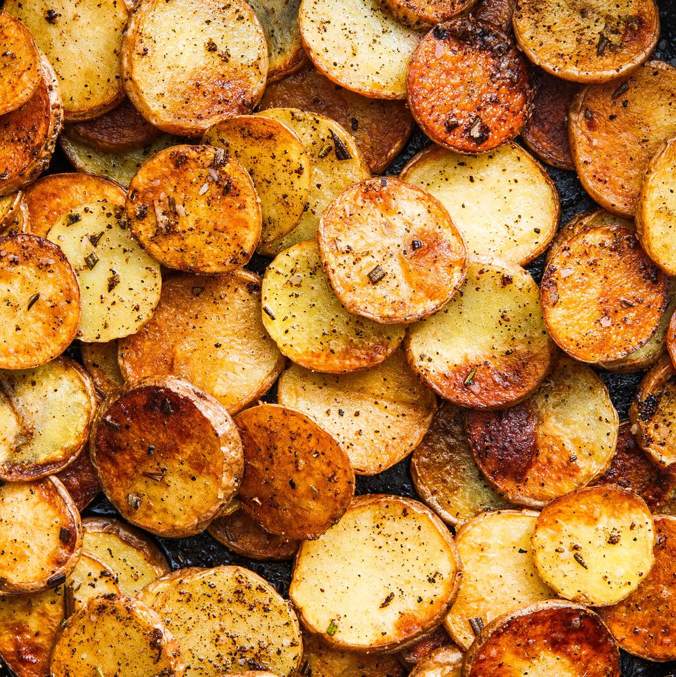

Potatoes

Description
When the craving for perfectly crisp fried potatoes sets in, nobody wants to wait around—you want your taters fast. A lot of skillet breakfast potatoes take way longer than they should, requiring you to boil your potatoes, then chop, and THEN fry. But, the truth is, you don't need to pre-cook your potatoes at all. For the perfect, extra-crispy pan-fried potatoes, you just need to slice 'em thin and choose the best oils (yes, the plural is intentional)
Ingredients
- 1 lb. baby potatoes, scrubbed clean
- 1 tbsp. vegetable oil
- 1 tbsp. extra-virgin olive oil
- 1 tbsp. freshly chopped rosemary
- 1 tsp. garlic powder (optional)
- 1/2 tsp. chili powder (optional)
- Kosher salt
- Freshly ground black pepper
Steps
- Slice potatoes into coins about ¼” thick. In a large skillet over medium-high heat, heat oils. Add potatoes and season with rosemary, salt and pepper. Cook, undisturbed, until potatoes are golden and crusty underneath, 4 to 5 minutes. Flip potatoes and cook until golden on other sides, 4 to 5 minutes more.
- Sprinkle with garlic powder and chili powder, and continue to cook, stirring occasionally, until potatoes are tender, about 2 minutes more. Serve warm.